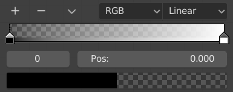
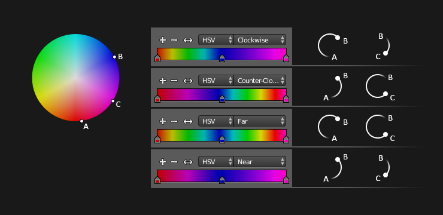

Color Ramp Widget¶
Color Ramps enables the user to specify a range of colors based on color stops. Color stops are similar to a mark indicating where exactly the chosen color should be. The interval from each of the stops, added to the ramp, is a result of the color interpolation and chosen interpolation method.

Color ramp.
Controls¶
- Add
+ - Clicking on this button will add a stop to your custom weight paint map. The stops are added from the last selected stop to the next one, from left to right and they will be placed in the middle of both stops.
- Delete
- - Deletes the selected color stop from the list.
- Specials
v Contains more operators for the color ramp.
- Flip Color Ramp
- Flips the gradient, inverting the values of the custom weight paint range.
- Distribute Stops from Left
- Distribute the stops so that every step has the same space to the right. This is mostly useful when used with Constant interpolation mode.
- Distribute Stops Evenly
- Space between all neighboring stops becomes equal.
- Eyedropper (pipette icon) E
- A Eyedropper to sample a color or gradient from the interface to be used in the color ramp.
- Reset Color Ramp
- Resets the color ramp to its default state.
- Color Mode
Selection of the color space used for interpolation.
- RGB
- Blends color by mixing each color channel and combining.
- HSV/HSL
- Blends colors by first converting to HSV or HSL, mixing, then combining again. This has the advantage of maintaining saturation between different hues, where RGB would de-saturate, this allows for a richer gradient.
- Interpolation Options
Enables the user to choose the types of calculations for the color interpolation for each color stop.
- RGB
- B-Spline
- Uses a B-Spline Interpolation for the color stops.
- Cardinal
- Uses a Cardinal Interpolation for the color stops.
- Linear
- Uses a Linear Interpolation for the color stops.
- Ease
- Uses an Ease Interpolation for the color stops.
- Constant
- Uses a Constant Interpolation for the color stops.
- HSV and HSL
- Clockwise
- Clockwise interpolation around the HSV/HSL wheel.
- Counter-Clockwise
- Counterclockwise around the HSV/HSL wheel.
- Near
- Nearest route around the wheel.
- Far
- Furthest route around the wheel.
HSV and HSL interpolation options.
- Active Color Stop
- Index of the active color stop (shown as a dashed line). Allows you to change the active color when colors may be too close to easily select with the cursor.
- Position
- This slider controls the positioning of the selected color stop in the range.
- Color
- Opens a color picker for the user to specify color and Alpha for the selected color stop. When a color is using Alpha, the color field is then divided in two, with the left side showing the base color and the right side showing the color with the alpha value.
{kind=link}
Shortcuts¶
- LMB (drag) moves colors.
- Ctrl-LMB (click) adds a new control point.